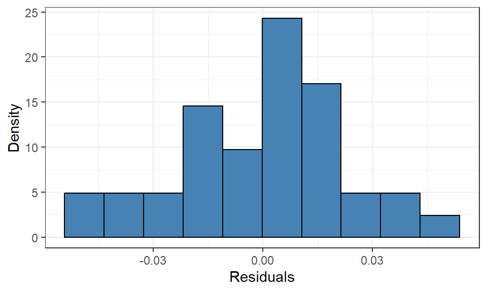
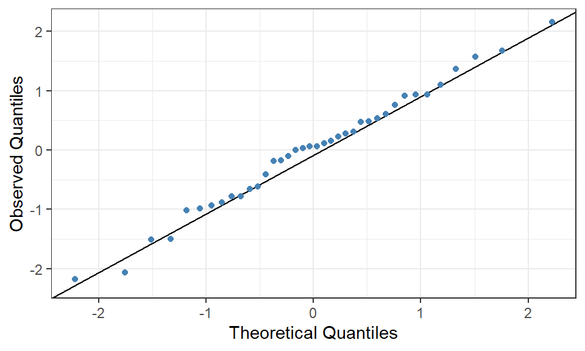
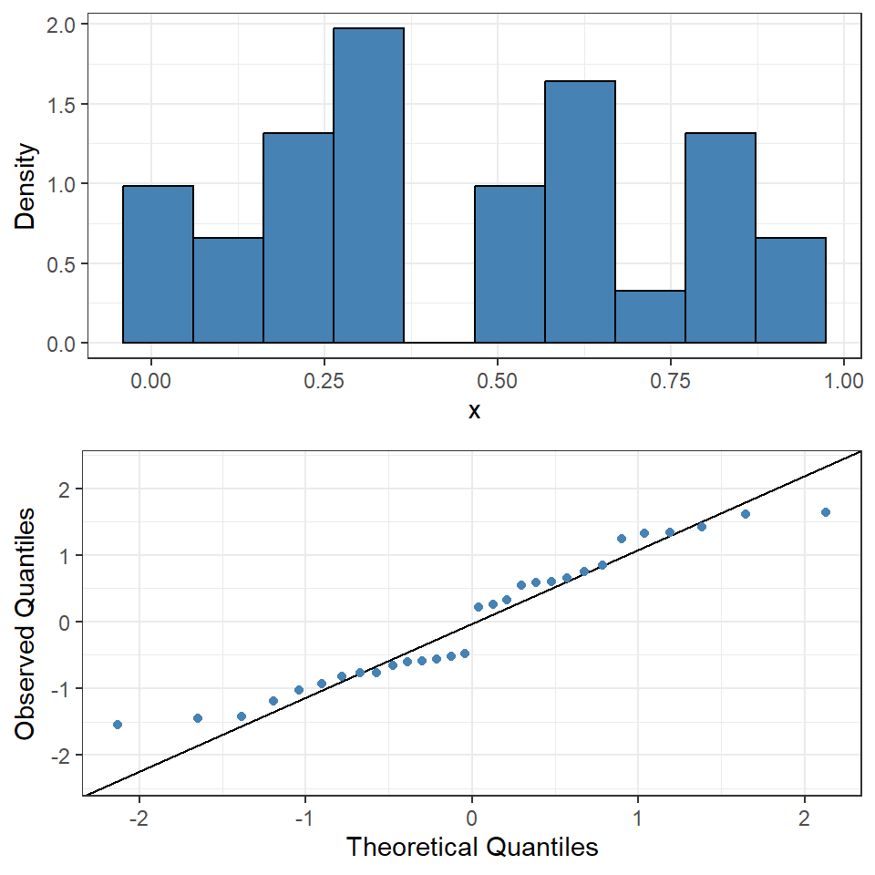
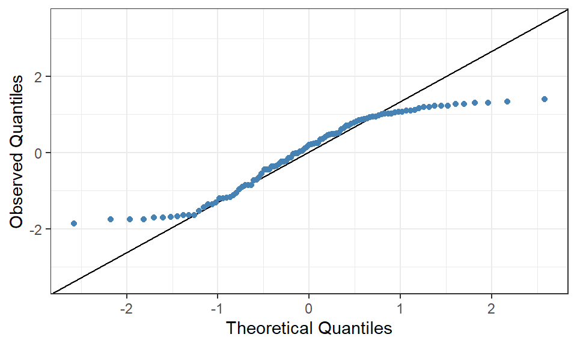
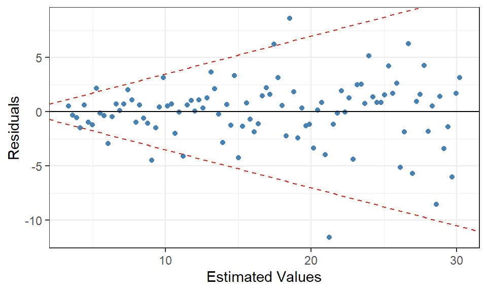
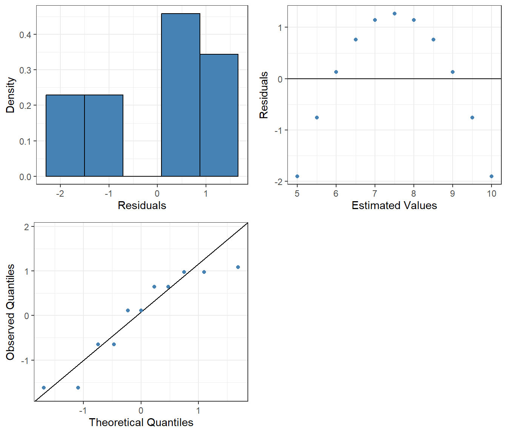
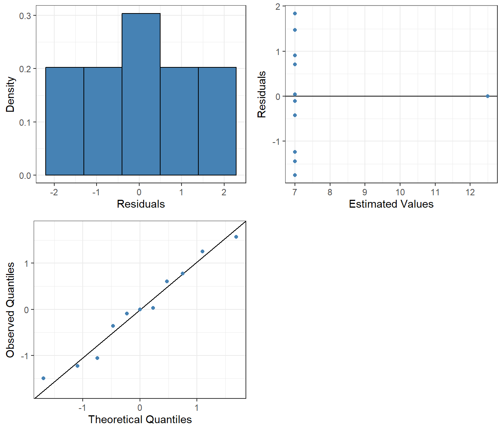
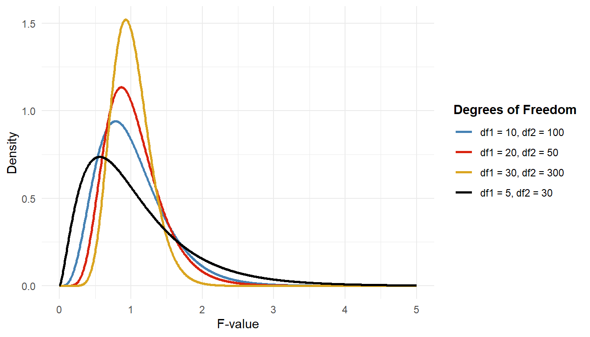

snails <- read_csv("island-FL.csv")
nux <- snails |>
filter(species == "nux")
nux |>
ggplot(aes(x = size, y = shape)) +
geom_point(color = "steelblue") +
theme_bw()
The first step in a regression analysis is to explore the dataset. Regardless of whether we conducted an observational or experimental study, we have likely selected a response variable beforehand that we want to describe or predict using other variables. The goal of exploring the data is to gain insights that can help us in later steps; which variables are relevant to include in a model, what each relationship looks like, and whether there are any issues with the collected data that need to be corrected.
Some key questions we need to answer are:
Once we’ve answered these questions, it becomes much easier to build a correct model structure and evaluate any estimated models.
We can investigate these points using simple functions (e.g., mean(), min(), summary(variable)), but we can also gain relevant information through individual and pairwise visualizations of the variables.
As an introductory example, let us load the Galápagos land snail data from Floreana Island (Section 4.2.2). We look only at individuals belonging to the species Naesiotus nux, and plot the shell shape measurement against the shell size measurement for each of them:
snails <- read_csv("island-FL.csv")
nux <- snails |>
filter(species == "nux")
nux |>
ggplot(aes(x = size, y = shape)) +
geom_point(color = "steelblue") +
theme_bw()Both of these variables are continuous quantitative, which means we can create a scatter plot where each observation is represented by a point. The explanatory variable is placed on the x-axis and the response variable on the y-axis. The point cloud in the scatter plot can give us information about the relationship between the two variables. We focus on four main points:
Defining the proper variable type and scale is very important in this exploratory step. Using the wrong type of visualization can easily misconstrue the relationship and send us on a wild goose chase.
We cannot use scatter plots to visualize the relationship between qualitative explanatory variables and a continuous response variable. Instead, we need visualizations that account for the qualitative scale, usually ordinal or nominal.
There are several ways to visualize the distribution of the response variable across levels of the explanatory variable, such as grouped histograms or box plots, but one type of visualization that shows distribution details is a violin plot. A violin plot is a mirrored density plot, where areas with many observations have a larger area under the curve. Using ggplot2, we can create such a plot with geom_violin().
Figure 17.1 shows a very sparse relationship that is a bit difficult to interpret. One could say that the relationship appears mostly linear, as an increase in shell size leads to a unidirectional change (increase/positive relationship) in shell shape. However, the relationship is not very strong, as there is a lot of variation in the shape values for each size value. There are also some outliers, which we can see as points that are far from the main point cloud.
We can calculate Pearson’s correlation coefficient (\(r\)) so we don’t have to rely on a subjective interpretation of the strength.1 This coefficient measures the strength of the linear relationship between two quantitative variables and is appropriate in this case. A value near 0 indicates no or weak relationship, while values near -1 or +1 indicate a strong negative or positive relationship, respectively.
\[ r = 0.358 \]
This is an additional indication that the correlation between the two variables is relatively weak, mostly due to the large variation in shape values for each size value. The correlation coefficient is not very high, but it is positive, indicating that larger shells tend to be more elongated.
If the scatter plot shows a non-linear and non-monotonic (not unidirectional) relationship, the Pearson correlation coefficient will not accurately describe the strength of the relationship. It is easy to rely solely on the correlation coefficient since it is simple to calculate for many variable pairs, but it can often miss relevant information. A visualization enables the identification of complex relationships that often require different modeling approaches.
After gathering information from visualizations and descriptive statistics, the next step in the process is to build the structure of the model.
\[ \text{shape}_i = \beta_0 + \beta_1 \cdot \text{size}_i + \varepsilon_i \tag{17.1}\]
Regardless of whether the model includes one or several explanatory variables, we must always keep in mind the five assumptions presented in Section 16.1.1, especially the assumption of linearity. If we have discovered non-linear relationships in the exploratory step, we need to model a more complex relationship than what is shown in Equation 17.1.
Equation 17.1 shows the “true” model based on all observed values in the population, but (nearly) all studies are based on some form of sample. Even a population census during a specific period can be considered a sample in time if the model is intended to be used after the study period ends.
We can denote the estimated model with its estimated parameters as:
\[ \hat{Y}_i = b_0 + b_1 \cdot X_{1i} \tag{17.2}\]
where: \[\begin{align*} \hat{Y}_i &= \text{estimated value of the response variable for observation } i\\ b_0 &= \text{estimate of the intercept}\\ b_1 &= \text{estimate of the slope parameter} \end{align*}\]
Some literature uses \(\hat{\beta}\) to denote estimated parameters.
We want this model to best describe the relationship so we first need to define what we mean by “best”. If we project two different estimated simple linear models onto a scatter plot of the two variables (Figure 17.2), each line will not hit all points exactly, each observation will lie at a certain distance from the regression line. This distance is the observation’s residual, denoted by \(e_i\), an estimate of \(\varepsilon_i\).
The vertical lines are the estimated residuals, measuring the deviation from the line and the actual data points. It is intuitively obvious that the first line (with intercept \(b_0 = -0.126\) and slope \(b_1 = 0.0038\)) is better than the second one (intercept \(b_0 = 0.148\) and slope \(b_1 = -0.0051\)). This is because the size of the residuals tend to be larger for the right panel. The model on the left is estimated using Ordinary Least Squares (OLS), where the goal is to minimize the model’s total error, whereas the one on the right is just a random line drawn on the graph.
Mathematically, we calculate \(e_i = Y_i - \hat{Y}_i\), where \(Y_i\) is the observed value (the point) and \(\hat{Y}_i\) is the model’s estimated value (the line). OLS estimates all model parameters so that the total error (Sum of Squares of Error, SSE)2 for all observations is minimized:
\[ SSE = \sum_{i = 1}^n e_i^2 = \sum_{i = 1}^n (Y_i - \hat{Y}_i)^2 \tag{17.3}\]
In simple linear regression, we can use simple formulas for the two parameter estimates, \(b_0\) and \(b_1\), that minimize SSE. However, as soon as we include multiple variables, this becomes significantly more complex. For these complex calculations we instead make use of matrix algebra, which happen behind the scenes in R when using the the function lm().
Formulas for parameter estimates in simple linear regression are: \[\begin{align*} b_1 &= \frac{\sum_{i=1}^n(X_i - \bar{X})(Y_i - \bar{Y})}{\sum_{i=1}^n(X_i - \bar{X})^2}\\ b_0 &= \bar{Y} - b_1 \cdot \bar{X} \end{align*}\]
\(b_1\) can also be reformulated as: \[ \begin{aligned} \frac{\sum_{i=1}^n(X_i \cdot Y_i) - \frac{\sum_{i=1}^nX_i \cdot \sum_{i=1}^nY_i}{n}}{\sum_{i=1}^nX_i^2 - \frac{(\sum_{i=1}^nX_i)^2}{n}} \end{aligned} \]
To fit a linear regression model in R, we use the lm() function with the following arguments:
formula: the model structure as a formula objectdata: the dataset containing the variablesA formula object is a special format R uses to describe the relationship between variables. Generally, the format is y ~ x, where x consists of the explanatory variables, for example shape ~ size.
If you have not experienced problems already, using lm() requires that we have the correct variable type for all variables as we expect. Make sure that any continuous variable is read as numeric!
simpleModel <- lm(formula = shape ~ size, data = nux)With summary(), we get a detailed output of the model that includes the estimated parameters which are also called regression coefficients. When presenting such output, we can use kable() or xtable() for a cleaner display.
To create this clean output of the coefficients, we need to extract a specific part of summary() using coef(). The documentation for lm() provides more information about what can be retrieved from the resulting regression object.
R is an object-oriented programming language, and the lm() function returns an object of class “lm”, which is a list. It is easy to extract desired parts from that list when needed. There are many functions associated with objects of class “lm”:
coef(): Returns regression coefficientsresiduals(): Returns residualsfitted(): Returns estimated values (\(\hat{Y}\))summary(): Returns a summary analysis of the regression model. This function returns an object of class “summary.lm”. See ?summary.lm in the documentation. coef() also works on these objects as shown above.anova(): Returns the ANOVA table for the modelpredict(): Makes predictions for (new) x-values, i.e., calculates \(\hat{Y}\) for given x-values. Can also calculate confidence intervals and prediction intervals for \(\hat{Y}\). See ?predict.lm() for details.confint(): Calculates confidence intervals for the regression coefficientsIt is also useful to use str() on lm objects. Check ?lm() under the “Value” section to see the different components of the object. We will make use of a couple of these objects in later chapters.
summary(simpleModel)
Call:
lm(formula = shape ~ size, data = nux)
Residuals:
Min 1Q Median 3Q Max
-0.048880 -0.016772 0.001423 0.013181 0.048515
Coefficients:
Estimate Std. Error t value Pr(>|t|)
(Intercept) -0.129240 0.040706 -3.175 0.00307 **
size 0.004083 0.001777 2.297 0.02752 *
---
Signif. codes: 0 '***' 0.001 '**' 0.01 '*' 0.05 '.' 0.1 ' ' 1
Residual standard error: 0.02275 on 36 degrees of freedom
Multiple R-squared: 0.1279, Adjusted R-squared: 0.1036
F-statistic: 5.278 on 1 and 36 DF, p-value: 0.02752kable() is a function from the knitr package which produces or HTML style formatted tables within R. Alongside knitr, we can also customize the design of the table with the help of functions from the kableExtra package, for example kable_styling() that is used in the below example.
xtable() comes from the xtable package and is used to create style tables, most often used for non-web resources.
require(knitr)
require(kableExtra)
summary(simpleModel) |>
coef() |>
as_tibble(rownames = NA) |>
rownames_to_column() |>
rename(
` ` = rowname,
Estimate = Estimate,
StdError = `Std. Error`,
`t-value` = `t value`,
`p-value` = `Pr(>|t|)`
) |>
kable(
digits = 4
) |>
kable_styling("striped")| Estimate | StdError | t-value | p-value | |
|---|---|---|---|---|
| (Intercept) | -0.1292 | 0.0407 | -3.1749 | 0.0031 |
| size | 0.0041 | 0.0018 | 2.2974 | 0.0275 |
Table 18.2 shows the estimated parameters (coefficients). For example, we can see that for each additional size of shell, the shape increases by approximately 0.0041 units on average.
The intercept is only relevant to interpret if the value range includes all zeros; if the data covers the region where all explanatory variables take the value 0. In this example, there is no data in that region, which means the intercept value has no meaningful interpretation.
Even though the interpretation of the intercept may not be meaningful, it must be included in the model in order for the OLS estimation to minimize SSE. If the intercept were removed, it would correspond to a line forced to cross the y-axis at \(y = 0\), which would result in a model that does not meet our criteria of the “best” model.
After fitting a model based on observations from visualizations and descriptive statistics, we can interpret the estimated relationship between the explanatory variables and the response variable, as we did in Section 17.2.1. However, there are two aspects we have yet to consider:
To assess the appropriateness of the model, we must examine whether it meets the assumptions presented in Section 16.1.1 through residual analysis, and conclusions about the population can be made using statistical inference. We always begin by evaluating the model’s appropriateness because the inference methods also rely on these assumptions being met.
Remember Equation 16.1? When modeling each individual observation, \(\varepsilon_i\) measures the difference between the regression line and the actual observation, which means we can shift the model’s assumptions presented in Section 16.1.1 from \(Y|X\) to \(\varepsilon\). \[ \varepsilon \overset{\mathrm{iid}}{\sim} N(0, \sigma^2) \tag{17.4}\]
This reformulation gives us a good starting point to evaluate the suitability of a estimated model.
Residual analysis involves calculating and visually exploring the residuals from a model against the model assumptions \(\varepsilon\overset{iid}{\sim}N(0, \sigma^2)\). Since we estimate error term with residuals, in practice we check if the residuals are independent, normally distributed with mean 0 and constant variance. Residuals can also be used to assess whether the estimated linear model is appropriately structured, i.e. whether the relationship between the response variable and the explanatory variables is linear.
For simplicity, we can extract the residuals as well as the observed and estimated values of the response variable from the estimated model (see Tip 17.1).
# Create a dataset for visualizations
residualData <-
tibble(
# Extracts the residuals from the model
residuals = residuals(simpleModel),
# The observed response values from the data
y = nux$shape,
# Extracts the estimated response values from the model
yHat = fitted(simpleModel)
)We will visualize these variables in various forms using ggplot2, which requires a data.frame or tibble with data.
We can examine the assumption of normally distributed residuals using a histogram and/or a QQ plot (quantile-quantile plot).
ggplot(residualData) +
aes(x = residuals, y = after_stat(density)) +
geom_histogram(bins = 10, fill = "steelblue", color = "black") +
theme_bw() +
labs(x = "Residuals", y = "Density")
ggplot(residualData) +
# Use standardized residuals
aes(sample = scale(residuals)) +
geom_qq_line() +
geom_qq(color = "steelblue") +
theme_bw() +
labs(x = "Theoretical Quantiles", y = "Observed Quantiles")
In the histogram, we want to see the symmetric, bell-shaped form of the normal distribution centered around 0, which can sometimes be difficult to detect especially with small datasets. The QQ plot shows the observed and theoretical quantiles, where we want the points to follow the drawn line for a “perfect” normal distribution.
Remember that quantiles is a generalization of a quartile that divides the observed values into equal parts.
The observed quantiles takes the information from the variable and defines each value as a specific quantile in order from smallest to largest.
The theoretical quantile assumes that the data is normally distributed with its given mean and standard deviation and for each observation calculates its quantile position within that distribution. We did that “manually” in Section 10.2.2 using pnorm().
The QQ plot then maps for each observation the observed quantile against the theoretical and draws a line where we would expect the points to lie if the data were normally distributed. If the points follow close to the line, we can assume that the data is approximately normally distributed.
For this model, we do not see any clear deviations from the expected pattern, which suggests that the residuals are normally distributed. However, we can never be 100% certain that the assumption is met, especially with small datasets.
We can consider the assumption of normality to be violated if these plots show strong deviations from what we expect. Even when we know a sample is drawn from a normal distribution, the histogram may not always show the shape we are looking for.

Strong deviations from normality may include, for example, multiple areas of high density:

or a highly skewed distribution:
These plots suggest that the model is missing an explanatory variable or the data needs to be transformed in some way to meet the assumption.
On top of non-normality, the QQ plot can also indicate if the model deviates from the assumption of linearity. If the QQ plot shows clear symmetrical patterns — for example if the points curve around the line as in the example below — it means the model does not meet the assumption of a linear relationship. In this example we are trying to model a sinus function with a linear model.

We can check the assumption of constant variance in the residuals using a scatter plot with residuals on the y-axis and either the estimated values or observed values of the explanatory or response variable on the x-axis. Typically, the estimated values of the response are used so that the x-axis reflects the entire model, but other variables may be useful to visualize to identify potential causes of a violated assumption.
ggplot(residualData) +
aes(x = yHat, y = residuals) +
geom_point(color = "steelblue") +
theme_bw() +
labs(x = "Estimated Values", y = "Residuals") +
geom_hline(
aes(yintercept = 0)
) +
# Imaginary boundaries
geom_hline(
aes(yintercept = -0.05),
color = "#d9230f",
linetype = 2
) +
geom_hline(
aes(yintercept = 0.05),
color = "#d9230f",
linetype = 2
)To meet the assumption of constant variance, the points at each cross-section of x-values should be evenly spread around the same limits. Think of it as placing an imaginary boundary two parallel lines along the maximum and minimum values of the residuals (the two red dashed lines in Figure 17.4), and the majority of points should be scattered between them with no big gaps from the point to the boundary. In Figure 17.4, we see that the variation seem to diminish with larger estimated values as observations fall further from the boundary. Since the dataset is relatively small and only three of the observations (\(\hat{Y} > -0.025\)) cause the issue we could consider the residuals to meet the assumption of constant variance.
If the lines covering the maximum and minimum values of the residuals are not parallel, the model does not meet the requirement of constant variance.

These phenomena usually mean that the entire model or parts of it need to be transformed to meet the assumption of constant variance.
We can also identify problems with linearity in this scatter plot. The figure below shows roughly constant variance in terms of variation across each cross-section of the x-axis, but there is a clear pattern in the residuals. This means the model has not successfully captured the relationship. In this case, it would be appropriate to visualize the residuals against each explanatory variable to identify which ones contribute to the non-linear relationship.
Most often we assess this assumption based on the data collection process. Only when we know the data has a time aspect — such as in time series data or when the same unit has been measured multiple times — we check that the model has accounted for this dependence properly.
A line plot of residuals in observation order can be used to examine independence, but as mentioned, this visualization is only used in special cases. The line plot should show “randomness,” meaning no clear patterns in the residuals.
ggplot(residualData) +
aes(x = 1:nrow(residualData), y = residuals) +
geom_line(color = "steelblue") +
theme_bw() +
labs(x = "Obs. index", y = "Residuals") +
geom_hline(
aes(yintercept = 0),
color = "black"
)Other examples of data with dependence include:
diagnosticPlots)You will encounter these residual plots many times when conducting regression analyses, so to simplify their generation we can create a custom function that does all of this for us at once. The cowplot package provides a function (plot_grid) that can combine multiple plots into one.
#' Custom function diagnosticPlots that generate visualizations of residuals
#' @param model A fitted model object of class "lm"
#' @param alpha Defines the opacity of the points (0-1)
#' @param bins Defines the number of bins in the histogram
#' @param scaleLocation Boolean if a scale location graph should be added
diagnosticPlots <-
function(
model,
alpha = 1,
bins = 10,
scaleLocation = FALSE
) {
if (model |> class() != "lm") {
stop("model must be an lm object")
}
if (alpha < 0 | alpha > 1) {
stop("alpha must be between 0 and 1")
}
if (bins <= 0) {
stop("bins must be a positive number")
}
# Summarizes the residuals, observed and fitted values in a tibble
residualData <-
dplyr::tibble(
residuals = residuals(model),
# The response variable is the first column in the model's model object
y = model$model[,1],
yHat = fitted(model)
)
# Generates the histogram to assess normality
p1 <-
ggplot2::ggplot(residualData) +
ggplot2::aes(x = residuals, y = after_stat(density)) +
ggplot2::geom_histogram(bins = bins, fill = "steelblue", color = "black") +
ggplot2::theme_bw() +
ggplot2::labs(x = "Residuals", y = "Density")
# Generates the scatter plot to assess constant variance
p2 <-
ggplot2::ggplot(residualData) +
ggplot2::aes(x = yHat, y = residuals) +
ggplot2::geom_hline(aes(yintercept = 0)) +
ggplot2::geom_point(color = "steelblue", alpha = alpha) +
ggplot2::theme_bw() +
ggplot2::labs(x = "Estimated Values", y = "Residuals")
# Generates the QQ plot to assess normality
p3 <-
ggplot2::ggplot(residualData) +
# Use standardized residuals
ggplot2::aes(sample = scale(residuals)) +
ggplot2::geom_qq_line() +
ggplot2::geom_qq(color = "steelblue", alpha = alpha) +
ggplot2::theme_bw() +
ggplot2::labs(x= "Theoretical Quantiles", y = "Observed Quantiles")
# If scaleLocation is TRUE, add a scale location plot
if (scaleLocation) {
p4 <-
ggplot2::ggplot(residualData) +
ggplot2::aes(x = yHat, y = sqrt(abs(residuals))) +
ggplot2::geom_point(color = "steelblue", alpha = alpha) +
ggplot2::theme_bw() +
ggplot2::labs(x = "Estimated Values", y = expression(sqrt("|Residuals|")))
cowplot::plot_grid(p1, p2, p3, p4, nrow = 2)
} else {
cowplot::plot_grid(p1, p2, p3, nrow = 2)
}
}
diagnosticPlots(simpleModel)In summary, Figure 17.5 shows that the residuals seem to meet the assumptions of normal distribution with mean 0 and constant variance. There are no clear patterns in any plot that suggest otherwise nor that the model fails to capture part of the relationship. A few outliers have been identified, specifically three observations with large estimated values. The conclusion is that the model is a suitable simplification of reality.
To further illustrate how diagnostics can be used to visually judge whether the assumptions of linear regression are met, let us take a look at a famous dataset that was designed for precisely this purpose (Anscombe 1973). The data are built into R (with the name anscombe), but are not in the most convenient format:
print(anscombe) x1 x2 x3 x4 y1 y2 y3 y4
1 10 10 10 8 8.04 9.14 7.46 6.58
2 8 8 8 8 6.95 8.14 6.77 5.76
3 13 13 13 8 7.58 8.74 12.74 7.71
4 9 9 9 8 8.81 8.77 7.11 8.84
5 11 11 11 8 8.33 9.26 7.81 8.47
6 14 14 14 8 9.96 8.10 8.84 7.04
7 6 6 6 8 7.24 6.13 6.08 5.25
8 4 4 4 19 4.26 3.10 5.39 12.50
9 12 12 12 8 10.84 9.13 8.15 5.56
10 7 7 7 8 4.82 7.26 6.42 7.91
11 5 5 5 8 5.68 4.74 5.73 6.89These are actually four datasets merged into one: x1 and y1 are \(x\)- and \(y\)-coordinates of the points from the first set, x2 and y2 from the second set, and so on. We can use pivot_longer to put these data in tidy format:
ansLong <-
anscombe |>
pivot_longer(cols = everything(), names_to = c(".value", "set"),
names_pattern = "(.)(.)")
print(ansLong)# A tibble: 44 × 3
set x y
<chr> <dbl> <dbl>
1 1 10 8.04
2 2 10 9.14
3 3 10 7.46
4 4 8 6.58
5 1 8 6.95
6 2 8 8.14
7 3 8 6.77
8 4 8 5.76
9 1 13 7.58
10 2 13 8.74
# ℹ 34 more rowsWe can now visualize each set, along with linear fits:
ansLong |>
ggplot(aes(x = x, y = y, color = set)) +
geom_point() +
geom_smooth(method = lm, se = FALSE) +
facet_wrap(~ set, nrow = 2, labeller = label_both) +
theme_bw()The data have been carefully crafted so that the least-squares regression line has an intercept of 3 and a slope of 0.5 for each of the four sets. Furthermore, the p-values are also identical to many decimal places. But this visual representation reveals what would have been much harder to intuit otherwise: that only the first set has a real chance of conforming to the assumptions of linear regression. Performing the regression on just this set and creating diagnostic plots:
lm(y ~ x, data = filter(ansLong, set == "1")) |> summary()
Call:
lm(formula = y ~ x, data = filter(ansLong, set == "1"))
Residuals:
Min 1Q Median 3Q Max
-1.92127 -0.45577 -0.04136 0.70941 1.83882
Coefficients:
Estimate Std. Error t value Pr(>|t|)
(Intercept) 3.0001 1.1247 2.667 0.02573 *
x 0.5001 0.1179 4.241 0.00217 **
---
Signif. codes: 0 '***' 0.001 '**' 0.01 '*' 0.05 '.' 0.1 ' ' 1
Residual standard error: 1.237 on 9 degrees of freedom
Multiple R-squared: 0.6665, Adjusted R-squared: 0.6295
F-statistic: 17.99 on 1 and 9 DF, p-value: 0.00217lm(y ~ x, data = filter(ansLong, set == "1")) |>
diagnosticPlots(bins = 5)While the number of data points is small, there is otherwise nothing to suggest in these diagnostic plots that there is anything wrong with the regression.
The situation changes for the other three sets. Let us look at set 2:
lm(y ~ x, data = filter(ansLong, set == "2")) |> summary()
Call:
lm(formula = y ~ x, data = filter(ansLong, set == "2"))
Residuals:
Min 1Q Median 3Q Max
-1.9009 -0.7609 0.1291 0.9491 1.2691
Coefficients:
Estimate Std. Error t value Pr(>|t|)
(Intercept) 3.001 1.125 2.667 0.02576 *
x 0.500 0.118 4.239 0.00218 **
---
Signif. codes: 0 '***' 0.001 '**' 0.01 '*' 0.05 '.' 0.1 ' ' 1
Residual standard error: 1.237 on 9 degrees of freedom
Multiple R-squared: 0.6662, Adjusted R-squared: 0.6292
F-statistic: 17.97 on 1 and 9 DF, p-value: 0.002179lm(y ~ x, data = filter(ansLong, set == "2")) |>
diagnosticPlots(bins = 5)
Blindly reading off the p-values without considering the diagnostic plots might lead one to take them seriously. This would be wrong however, as the assumptions of the linear regression are clearly not fulfilled. The right diagnostics show that the residuals are not independent, and certainly not homoscedastic (equal variance). The QQ plot and histogram additionally shows that they are not even normally distributed.
In set 3, the trends are driven too much by a single outlier:
lm(y ~ x, data = filter(ansLong, set == "3")) |> summary()
Call:
lm(formula = y ~ x, data = filter(ansLong, set == "3"))
Residuals:
Min 1Q Median 3Q Max
-1.1586 -0.6146 -0.2303 0.1540 3.2411
Coefficients:
Estimate Std. Error t value Pr(>|t|)
(Intercept) 3.0025 1.1245 2.670 0.02562 *
x 0.4997 0.1179 4.239 0.00218 **
---
Signif. codes: 0 '***' 0.001 '**' 0.01 '*' 0.05 '.' 0.1 ' ' 1
Residual standard error: 1.236 on 9 degrees of freedom
Multiple R-squared: 0.6663, Adjusted R-squared: 0.6292
F-statistic: 17.97 on 1 and 9 DF, p-value: 0.002176lm(y ~ x, data = filter(ansLong, set == "3")) |>
diagnosticPlots(bins = 5)
As before, the right diagnostic plots show that the independence of the residuals is violated. Finally, in set 4, the whole regression is based on a single point whose predictor x is different from that of the rest:
lm(y ~ x, data = filter(ansLong, set == "4")) |> summary()
Call:
lm(formula = y ~ x, data = filter(ansLong, set == "4"))
Residuals:
Min 1Q Median 3Q Max
-1.751 -0.831 0.000 0.809 1.839
Coefficients:
Estimate Std. Error t value Pr(>|t|)
(Intercept) 3.0017 1.1239 2.671 0.02559 *
x 0.4999 0.1178 4.243 0.00216 **
---
Signif. codes: 0 '***' 0.001 '**' 0.01 '*' 0.05 '.' 0.1 ' ' 1
Residual standard error: 1.236 on 9 degrees of freedom
Multiple R-squared: 0.6667, Adjusted R-squared: 0.6297
F-statistic: 18 on 1 and 9 DF, p-value: 0.002165lm(y ~ x, data = filter(ansLong, set == "4")) |>
diagnosticPlots(bins = 5)
Clearly, the assumption that the residual variances are independent of the predictor is heavily violated.
These examples are there to urge caution when interpreting regression statistics. This problem becomes much more acute when relying on multiple regression, where there is more than one predictor variable. Since high-dimensional data cannot be visualized as easily as the datasets above, often the diagnostic plots are the only way to tell whether the assumptions of regression hold or not.
Once we have confirmed that the model is suitable, i.e. that it fulfills its assumptions, we can focus on interpreting the model’s results in relation to the population. In regression analysis, we can perform several types of statistical inference: on the entire model, on groups of parameters, or on individual parameters.
We can start with an F-test for the entire model to determine whether at least one slope parameter is significant — whether the model is worth investigating further — and then perform individual t-tests for each parameter to assess which explanatory variables have a significant effect on the response variable. Since qualitative variables often consist of multiple parameters, these need to be combined to examine the variable’s overall relationship, which we can do with a partial F-test.
In the case of simple linear regression the entire model, groups of parameters and individual parameters are all one and the same test because we only include one explanatory variable (one slope parameter) in the model. Once we start adding more variables to the model these three types of inference differ and we choose the one suitable for the analysis we want to perform.
Before diving into the details of the different tests, we need to present the ANOVA table, which is used to break down the variation in the response variable into the model’s components: the explanatory variables and the error term.
Analysis of Variance is a collection of methods that calculate the variation of different model components. The goal of a model is to explain the total variation in the response variable as effectively as possible. Everything the explanatory variables help to describe is called the explained variation, and what the model fails to explain (the remaining error) is the unexplained variation.
\[ \underbrace{Y}_\text{total variation} = \underbrace{\beta_0 + \beta_1 \cdot X}_\text{explained variation} + \underbrace{\mathbf{\varepsilon}}_\text{unexplained variation} \tag{17.5}\]
Equation 17.5 shows that the total variation is the sum of the explained and unexplained variation, which is also reflected in the formulas for each component. Each component is calculated as follows:
\[ \text{total variation} = SST = \sum_{i=1}^n(Y_i - \bar{Y})^2 \] This corresponds to the numerator for the variance of \(Y\). The total variation describes how much variation exist if we were to use the mean of \(Y\) as the model.
\[ \text{unexplained variation} = SSE = \sum_{i=1}^n(Y_i - \hat{Y_i})^2 \]
We have previously used SSE as a measure of model error (see Equation 17.3), describing the variation of the observed and estimated value.
\[ \text{explained variation} = SSR = \sum_{i=1}^n(\hat{Y_i} - \bar{Y})^2 \]
SSR describes the variation between the model’s estimated values and the mean of \(Y\). This can be interpreted as how much more variation the model explains compared to the mean, or simply, how much better the model is at explaining variation in \(Y\) than only its mean.
Adding these all together we can simplify its sum as: \[ \sum_{i=1}^n(Y_i - \bar{Y})^2 = \sum_{i=1}^n(\underbrace{\hat{Y_i}}_\text{positive estimates} - \bar{Y})^2 + \sum_{i=1}^n(Y_i - \underbrace{\hat{Y_i}}_\text{negative estimates})^2 \] where the positive and negative estimates cancel each other out to produce the left hand side.
We can also visualize this relationship in a stacked bar chart. The total height of the bar is SST, while the different segments show how much of the total variation is explained or unexplained in a given model.

An ANOVA table is a way to efficiently summarize these components and show additional information, such as degrees of freedom (\(df\)) for each component and mean squares.
Degrees of freedom describe how many slope parameters are estimated for each part3 and mean squares show the average variation per degree of freedom, \(\frac{SS}{df}\).
| Source | DF | Sum of Squares | Mean Square |
|---|---|---|---|
| Model (Regression) | \(df_R = k\) | \(SSR\) | \(MSR = \frac{SSR}{df_R}\) |
| Error | \(df_E = n - (k + 1)\) | \(SSE\) | \(MSE = \frac{SSE}{df_E}\) |
| Total | \(df_T = n - 1\) | \(SST\) |
A simple ANOVA table like Table 17.2 shows only the three main components, but different software may display other breakdowns by default. In a multiple linear regression model, it is common to further divide the explained variation, for example into sequential sums of squares (Section 18.1.7.1).
Using the different sources of variation, we can calculate tests for the whole model or parts of it using various F-tests, while the individual parameter estimates and their associated standard errors can be used in tests for individual slope parameters.
In linear regression, an F-test for the entire model is a good starting point to determine whether at least one slope parameter is significant. We examine the hypotheses:
\[\begin{align*} H_0&: \beta_1 = \beta_2 = \beta_3 = \cdots = \beta_k = 0\\ H_a&: \text{At least one of } \beta_j \text{ in } H_0 \text{ is different from } 0 \end{align*}\]
If at least one slope parameter is significant, it means there is at least one variable that contributes some explained variation, hence the model is better than using just \(\bar{Y}\). The test statistic examines the relationship between explained and unexplained variation via their mean squares:
\[ F_{test} = \frac{SSR / k}{SSE / (n - (k+1))} = \frac{MSR}{MSE} \]
The test statistic follows an F-distribution governed by two degrees of freedom: \(df_1\) from the numerator and \(df_2\) from the denominator in the calculation, i.e., the model and error degrees of freedom respectively. If \(H_0\) is true, the test statistic will be 0, while if \(H_a\) is true, the test statistic will be a large positive number. Since both mean squares are positive, the ratio will always be positive, and we can reject \(H_0\) if the test statistic is sufficiently far from 0.

Using the output from summary(), we can find the result of the F-test at the bottom row.
summary(simpleModel)
Call:
lm(formula = shape ~ size, data = nux)
Residuals:
Min 1Q Median 3Q Max
-0.048880 -0.016772 0.001423 0.013181 0.048515
Coefficients:
Estimate Std. Error t value Pr(>|t|)
(Intercept) -0.129240 0.040706 -3.175 0.00307 **
size 0.004083 0.001777 2.297 0.02752 *
---
Signif. codes: 0 '***' 0.001 '**' 0.01 '*' 0.05 '.' 0.1 ' ' 1
Residual standard error: 0.02275 on 36 degrees of freedom
Multiple R-squared: 0.1279, Adjusted R-squared: 0.1036
F-statistic: 5.278 on 1 and 36 DF, p-value: 0.02752F-statistic: 5.278 on 1 and 36 DF, p-value: 0.02752 the p-value can be interpreted as we would any hypothesis test, comparing it against the chosen significance level (chosen before estimating the model!). Since the p-value is less than 5 percent, we can reject \(H_0\) and conclude that at least one of the variables is associated with the response variable.4
Even though the F-test for the model and the individual t-test for the slope is the same test in a simple linear regression, this is not the case for a multiple regression model. As such it is not appropriate to look at the ANOVA table when we want to examine individual parameters. Instead, we should use the coefficient table from the summary() output.
Formally, the hypotheses are:
\[ \begin{aligned} H_0 &: \beta_j = 0\\ H_a &: \beta_j \ne 0 \end{aligned} \]
where \(j\) is one of the slope parameters in the model.
The test statistic is calculated from the estimated slope parameter and its standard error:
\[ t_{test} = \frac{b_j - 0}{s_{b_j}} \]
The test statistic follows a t-distribution under \(H_0\) with \(n - (k + 1)\) degrees of freedom.
In R, t-tests are included in the coefficient table, which we can extract from the summary() object using coef().
summary(simpleModel) |>
coef() |>
round(4) |>
kable(format = "markdown",
col.names =
c(
"Variable",
"Estimate",
"Std. Error",
"t-value",
"p-value"
),
parse = TRUE) |>
kable_styling("striped")| Variable | Estimate | Std. Error | t-value | p-value |
|---|---|---|---|---|
| (Intercept) | -0.1292 | 0.0407 | -3.1749 | 0.0031 |
| size | 0.0041 | 0.0018 | 2.2974 | 0.0275 |
In Table 17.3, we see that the p-value for the slope is less than 5 percent which means we can reject \(H_0\) at the 5% significance level, meaning the variable has a significant effect on the response variable.
Just because a model is appropriate, meets model assumptions, and contains significant parameters does not mean it is the best model that can explain the response or even that it is a good one. With the help of various evaluation metrics, we can get an overview of how good the model is.
The coefficient of determination (\(R^2\)) describes what proportion of the total variation is explained by the model’s explanatory variables. With this description, we can calculate \(R^2\) as:
\[ R^2 = \frac{SSR}{SST} = 1 - \frac{SSE}{SST} \] Given that this is a proportion of the total variation its values range from 0 (model is useless at explaining the response) to 1 (model perfectly explains the response) and is interpreted in percent.
The coefficient of determination is called multiple R-squared in R and can be found at the second to last line in the summary() output. Multiple R-squared: 0.1279 is interpreted as approximately 13 percent of the total variation in snail shape is explained by the snail size, which is a very low value.
Good models typically have an \(R^2\) value above 0.5, meaning that at least half of the total variation is explained by the model. However, this is not a strict rule and depends on the context of the analysis. In some fields, such as social sciences, an \(R^2\) value of 0.3 or even lower may be considered acceptable.
Whenever we get a low coefficient, we should consider the model structure and whether it is appropriate for the data. We can also consider adding more explanatory variables to the model, transforming existing variables, or using a different type of model altogether.
Sometimes there is just too much variation in the data that cannot be explained by any measured variable, and the best model we can produce is still a poor one. In these cases, we should be careful not to add too many variables or transformations that do not significantly improve the model’s predictive power.
We can also use the estimated model to predict new values of the response variable for new observations. From the estimated regression line, we substitute each variable with the observation’s actual value and get a simple sum that describes the response variable’s value on the line.
Predictions involve estimating the value of \(Y\) given observed values of \(X\) using the estimated regression line. These predictions will fall along the line, which further motivates that the model needs to be appropriate and good. We don’t want a prediction in one area to be more accurate than a prediction in another, or for the regression line to generally be a poor representation of the response variable. The model is based on a specific domain, the observed values of \(X\), and predictions should be made within this domain.
There are certain cases, such as in time series analysis, where predictions are made outside the domain, but there is a time dependency that enables these extrapolations. In “normal” regression, we should avoid extrapolating the regression line outside the domain.
If we are interested in the average value of the response variable for all new observations with given values of \(X\), we can estimate \(\mu_{Y|X_0}\) where \(X_0\) contains values for the new observation. We use the estimated regression model and calculate a point prediction of the response variable with the help of predict() which substitutes the values of \(X_0\) into the regression equation:
x0 <-
tibble(
size = 23
)
predict(
simpleModel,
newdata = x0,
interval = "confidence"
) fit lwr upr
1 -0.0353207 -0.04283735 -0.02780405The interval estimate for a mean becomes a confidence interval because we are making inference of all possible new observations with the shell size of 23 units.
If we are instead interested in a single value of \(Y\) with given values of \(X\), we can estimate \(Y_{X_0}\). Since the prediction uses the same estimated model the point estimate will be the same as the mean prediction, but the interval estimate will be wider because it accounts for the additional uncertainty of predicting a single value rather than the mean of all possible values. We can use predict() with the interval argument set to "prediction":
predict(
simpleModel,
newdata = x0,
interval = "prediction"
) fit lwr upr
1 -0.0353207 -0.08206763 0.01142622The interval estimate of an individual observation becomes a prediction interval because we only account for one new observation with the shell size of 23 units.
The file plant_growth_rate.csv contains individual plant growth data (mm/week), as a function of soil moisture content.
lm() and interpret the regression coefficients.It is difficult to measure the height of a tree. By contrast, the diameter at breast height (DBH) is easy to measure. Can one infer the height of a tree by measuring its DBH? The built-in dataset trees contains DBH data (labeled Girth), as well as measured height and timber volume of 31 felled black cherry trees. You can ignore timber volume, and focus instead on how well DBH predicts tree height.
trees dataset.Or other measures of association strength, e.g., Kendall (Kendall 1955) or Spearman (Spearman 1904).↩︎
Why the sum of squared residuals, and not just their simple sum? This is to prevent very large positive and very large negative deviations canceling each other out in the sum, making it appear as if the total deviation was very small. Squared deviations are always non-negative and therefore do not suffer from this cancellation problem.↩︎
Degrees of freedom actually describe how many pieces of independent information are available for a calculation. Think back to the calculation of sample standard deviation, where the degrees of freedom are \(n - 1\), the number of observations minus 1, because we estimate the mean when calculating the standard deviation.↩︎
If we had made a different decision (not rejecting the null hypothesis), it would not be relevant to continue with the analysis, or at least the remaining analysis should focus on investigating why a linear regression model we expect to show a relationship based on pairwise scatter plots does not show it collectively.↩︎